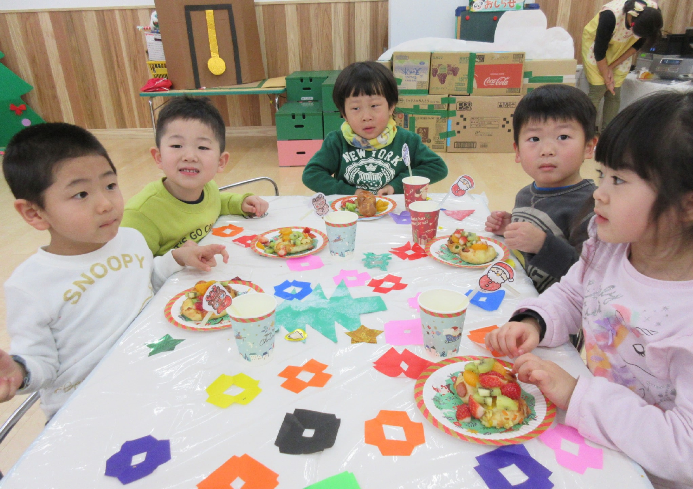

お知らせ
2020.08.01 ニュースを更新しました！最新です。
2020.08.01 ニュースを更新しました！最新です。
2020.08.01 ニュースを更新しました！最新です。
2020.08.01 ニュースを更新しました！最新です。
2020.08.01 ニュースを更新しました！最新です。

保育園紹介
保育園紹介ページに遷移します。ここに何かテキストが入ります。このくらいの文章量です。ここに何かテキストが入ります。このくらいの文章量です。
食育活動
食育活動ページに遷移します。ここに何かテキストが入ります。このくらいの文章量です。ここに何かテキストが入ります。このくらいの文章量です。


1日の流れ
1日の流れページに遷移します。ここに何かテキストが入ります。このくらいの文章量です。ここに何かテキストが入ります。このくらいの文章量です。
年間行事
年間行事ページに遷移します。ここに何かテキストが入ります。このくらいの文章量です。ここに何かテキストが入ります。このくらいの文章量です。
お問い合わせ
保育園に関するご相談・ご意見はこちからどうぞ。
お電話でお問い合わせください。
0120-1234-1234

©2022 七日市保育園